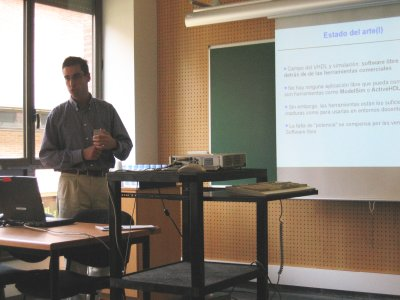

|
"Simulación de Diseños VHDL con Software Libre: La Herramienta GHDL". Universidad Autónoma de Barcelona, Septiembre 2004. |
|
 |
Título: “Simulación de Diseños VHDL con Software Libre: La Herramienta GHDL”
Actividad: Exposición del artículo con el mismo nombre. Artículo disponible aquí.
Duración: 15 minutos
Evento: IV Jornadas sobre Computación Reconfigurable y Aplicaciones, JCRA04.
Lugar: Escuela Técnica Superior de Ingenierías. Universidad Autónoma de Barcelona (UAB).
Fecha: 13 de Septiembre de 2004
Ponentes:
En este tutorial se explica el funcionamiento de la herramienta GHDL, un compilador libre de VHDL basado en el GCC. Permite generar directamente ejecutables a partir de fuentes en VHDL. Al tratarse de software libre, se puede utilizar y distribuir sin ninguna restricción. Primero se presentan dos ejemplos muy sencillos, que se compilan con GHDL y se visualizan los resultados con GTKWAVE. A continuación se muestra cómo trabajar con proyectos más complejos, constituidos por múltiples ficheros y entidades. El compilador genera el fichero Makefile, que permite automatizar la compilación mediante el uso de la herramienta Make. Por último, se desarrolla un ejemplo de cómo invocar funciones escritas en C, desde código VHDL.
|
Descargas |
|
pres-ghdl.sxi (58KB) |
Presentación para OpenOffice 1.1.3 |
|
pres-ghdl.pdf (263KB) |
Presentación en PDF |
|
ghdl.pdf (36KB) |
Artículo en PDF |
|
ghdl.tgz (82KB) |
Fuentes del artículo para Lyx (Dibujos en Xfig) |
Se condecen permisos para usar, modificar y/o distribuir esta presentación, siempre que se mantenga esta nota.
Artículo completo: [PDF] [HTML] [Más información]
Accesible en este enlace: [Cuaderno bitácora JCRA04]
17/Mayo/2005: Publicada información en esta web. Con mucho retraso, lo sé ;-)